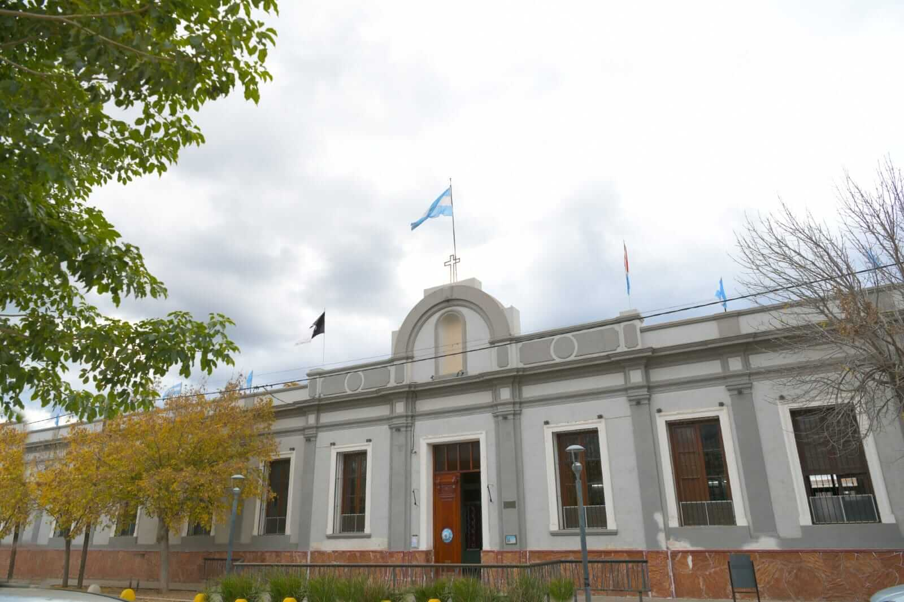

Historia del Colegio
Inicios y Fundación
Corría el año 1906 en la ciudad de Córdoba, cuando el Obispo Fr. Zenón Bustos consultó, por nota, a las Hermanas Dominicas sobre la posibilidad de fundar un colegio en Villa de Soto. Esto se debía a la voluntad testamentaria de don Bernabé Peralta, y la Congregación aceptó por unanimidad la convocatoria.
El 22 de julio de 1913, se decidió que el establecimiento “debería ser dedicado a Santo Domingo de Guzmán” por el vínculo cercano del Dr. Bernabé Peralta con la Orden Dominicana.
El 15 de agosto de 1913, se colocó la primera piedra del Colegio Santo Domingo, bajo la advocación de la Santísima Virgen, vice patrona del pueblo. Los pobladores participaron con entusiasmo, y la emoción se reflejaba en lágrimas de alegría por este gran paso.
Primeros Pasos en la Villa
El 24 de diciembre de 1917, las primeras Hermanas llegaron a Villa de Soto. Fueron recibidas en la estación ferroviaria por el Sr. Teófilo Núñez y su hijo, quienes las trasladaron a su casa, donde las esperaba el Párroco Pbro. Alberto Molina junto con una comisión de damas que ofreció un chocolate de bienvenida.
En diciembre de 1918, el edificio del colegio ya se levantaba majestuoso sobre la calle José Ignacio Peralta, gracias al trabajo constante de las Hermanas y el apoyo de la comunidad.
Finalmente, el 10 de marzo de 1919, se inauguró el colegio con la celebración de una Eucaristía presidida por el Sr. Obispo. Las puertas se abrieron el 19 de marzo con los seis grados de escolaridad primaria, facilitando la alfabetización femenina en la región.
Crecimiento del Instituto
Desde 1919, las Hermanas han sido un signo en la Villa, llevando adelante su misión de “enseñar al que no sabe, preparar el corazón y la inteligencia”. El desfile de alumnos ha sido constante, llevando consigo los valores del Evangelio donde quiera que estén.
Han pasado más de 100 años desde entonces, marcados por hitos como:
- 1944: Inauguración del Jardín de Infantes.
- 1959: Apertura del Nivel Secundario.
- 1979: Inicio del Nivel Superior.
- 2019: Creación del Departamento de Capacitación e Investigación con el 1 Congreso de Educación en la Región.
Hoy como ayer caminamos con fe, esperanza y optimismo, con la fortaleza que dan los años de la experiencia, pero con el corazón joven, caminamos bajo la mirada providente de Dios Padre y la protección de nuestra Madre del Rosario y de Santo Domingo de Guzmán.